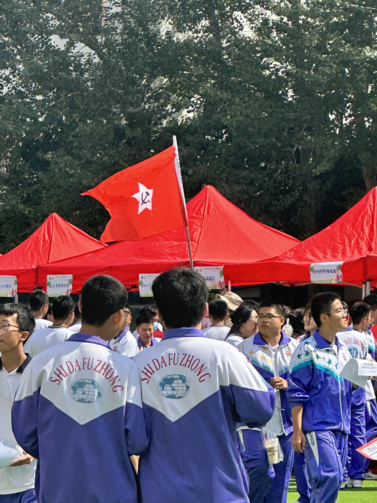

长庆街回忆录(2025)
本页面仅作为备份，不遵循CC共享协议，相关权利归原文档作者所有，原文档链接为https://www.kdocs.cn/l/cfIlcl65HAhU
hello红星年级的各位同学！这里是红星年级的漂流瓶《长庆街回忆录》，创意灵感来自于上一届的黄星学长学姐们发起的《我们与长庆街》这一文档，并加以传承与创新。（感谢学长学姐！）旨在为了给已毕业同学们留下回忆校园生活的线上途径～
1.所有人都可以进行编辑与留言，为回忆录增添独属于自己的一道色彩！大家可以在这里畅所欲言，写下回忆！
2.请大家帮忙多多宣传，回忆录越满越承载着大家的美好记忆。
3.校风石以上的内容不要编辑和改动，请大家在下方留言。
ps：同样的一点点小要求：不要发布违法内容，不要发布或评论带有侮辱、引战、嘲讽等等色彩的留言，不要随意删改他人内容，不要打广告或留下联系方式等～感谢各位
留言方式：请使用文档自带的序号工具进行序号输入，不要自己打序号。感谢～
一定要加序号方便区分整理～
东北师大附中是我们共同的精神故乡


长庆街上承载了无数人的春夏秋冬
潘捷列夫永存！
突然好想吃食堂的饭菜了……
自由唯一一个纯粹的红星球队长庆街上
正青春 一起拼！
是上学时未升起的朝阳，是放学时已等候多时的夜空，是三载青春，不负你我！
都好正经 那我就喵喵喵喵喵喵喵
英语听力早自习从来没有醒着的时候 音乐一响眼睛自己就闭上了（这不对吧）
12.9合唱的工程文件
永远怀念最好的红星年级，永远怀念最好的红星一班赌场！（？这对吗） 窜！！

红星一班B310棋牌室风韵犹存（bushi）

谁有一班所有课任老师的照片呀在楼下放一张！！！
谁懂甜家的茶冻
永远会怀念青华食堂高三下后期莫名消失的肠类食物
青华最后一次二晚，好青春的照片
另一个角度的青华最后一次二晚！
不记得从哪里保存的啦(如果冒犯到会删掉)
忘不了纸飞机的大飞机和青华的天空，我真的想我的所有老师了
我想回到那个后门继续坐着
谁懂
最后一个二晚永远是附中学生的意难平
我爱Culture一辈子！
翻相册翻到了上届黄星学长（或学姐）给的，已经怀念了😭

大家确实好正经啊（嚼嚼嚼）
最后几次二晚的晚霞，这次可以大大方方在二晚拿出来手机拍了……
运动会开幕式上的气球
爱来自红星所有班主任


那个冬天很冷 凌晨五点的天很黑 可我们都挺过去了不是么
永做真我 人生何处不花开
向着多彩的明天，未来再见
史上最空旷的班级来袭

它叫七百五
有很多美丽的晚霞在即将要高考的那一周与我们邂逅
AAA吉艺在读 想家可联系🔥🔥
自成高山 高山景行（黑粉也是粉）高三一班wyz实名羡慕
B310棋牌室已经放照片了啊，那咋整啊，那插里吧那种语气 高山景行早期视频流出～
太涩琴了bro
不是哥们这可不兴放唉😧


6月4号🥹

1100天 认识52个人
当年这旗谁举的

取毕业证那天拍的

“这不是枯燥的文字这是我贫瘠生命里开出的花.”
志存高远，学求博深。
迎接小绿星
咪咪学姐orz。
留一张答疑室

怀念町家寿司家满满添加剂的骨汤拉面，在哪吃都吃不出那个味道了
体活课偷偷溜出去的时候一脸哭相其实在憋笑（）
答疑教室满满的安全感！
有人记得栅栏经济嘛？
记得记得！！！可惜后来换地方了
其实是家族耻辱（点头
回复楼上 还有家族的耻辱（鼓掌）
这个是好东西
帆间弃水闻朝至，滚落金涛作喜澜
楼上ljq落墨（原创lxy）前两句能写吗
好诗！（上过范文版）
我爱卢老师😋
想再去一次自由天台
啊啊啊啊我懂啊我高三最后一周天天翻！！！（14班某人
猛听得金鼓响画角声震
唤起我破天门壮志凌云
冰淇淋胡同的爬山虎🥺🥺
高三下的每个周六，在正式开始上课之前，和好朋友去乒乓球馆里打球
好期待高中生活呀☺️三年后我还会回来的
在相册里翻到好多 干脆一股脑全发出来吧！

58.超级喜欢的自由后院，每天晚饭后都会去散步，特别是冬天，基本上只有我一个人

59.
高考前自主复习的某一天某一刻
60.我爱在长庆街的每分每秒